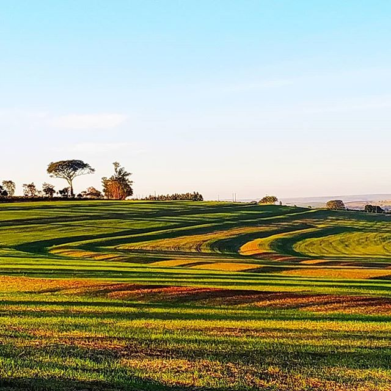
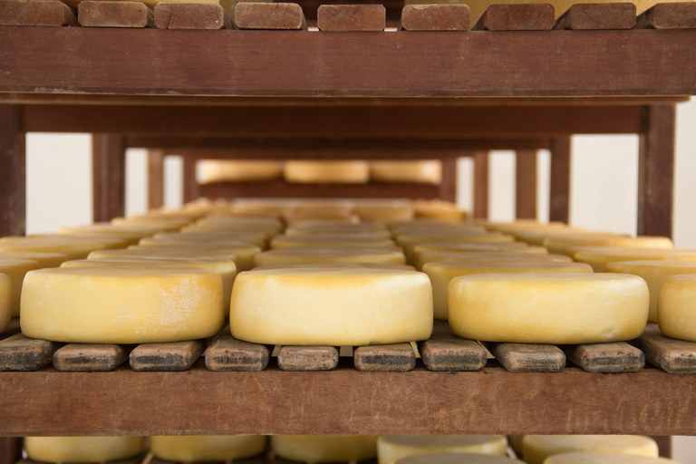
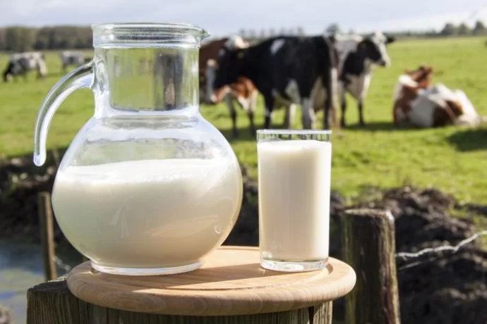
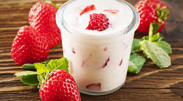

Quem Somos
Na fazenda Gotardo, são utilizadas as mais novas e modernas tecnologias disponíveis no mercado para o cuidado da plantação, sustentabilidade e rodízio da plantação, aproveitando ao máximo os insumos e as sementes.


Produtos
Nossos produtos derivados do leite são de qualidade de exportação, com as melhores avaliações e todos certificados pela Vigilância Sanitária e pelo Ministério da Agricultura.



Todo animal destinado ao frigorífico passa por diversas etapas desde o seu nascimento até o abatimento, onde são controlados todos os tipos de vacinação e evolução do rebanho.


Nossos Clientes
Nossa gama de clientes vai desde o pequeno comércio até as grandes empresas. Exportamos nossos produtos para mais de 7 países.


Fórum de Clientes
Veja o que nossos clientes dizem sobre a Fazenda Gotardo: